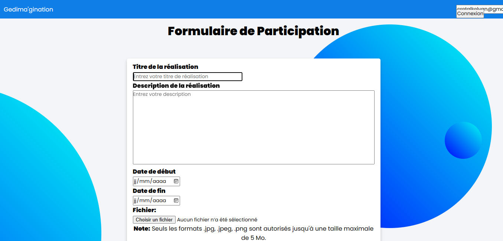
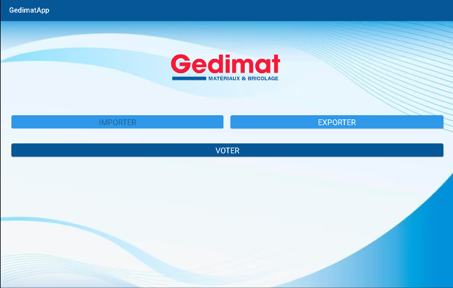
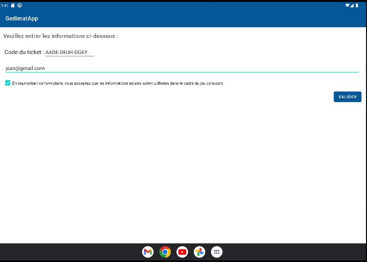
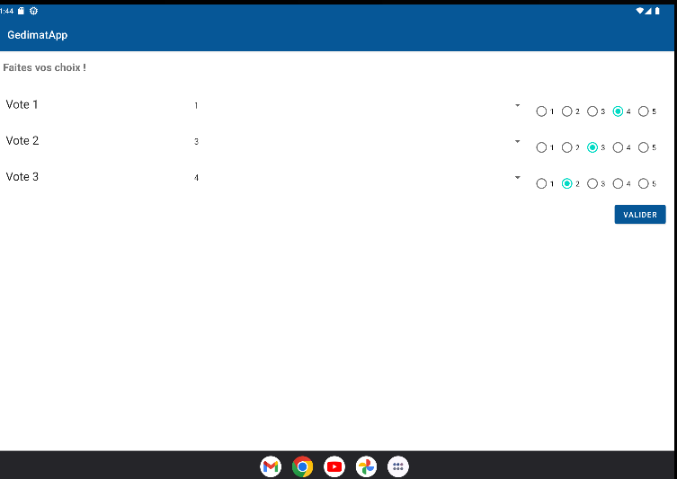
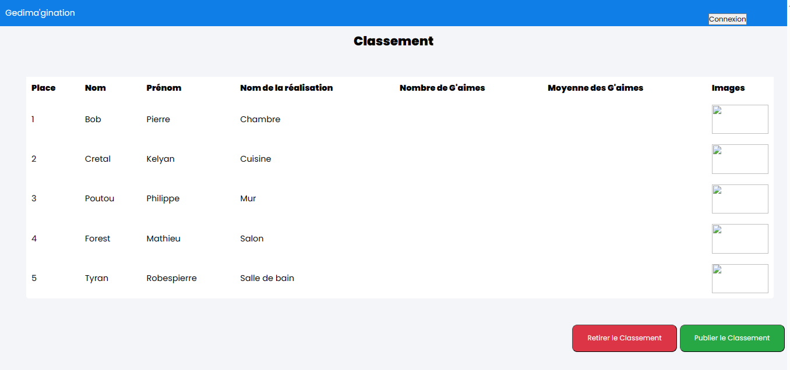
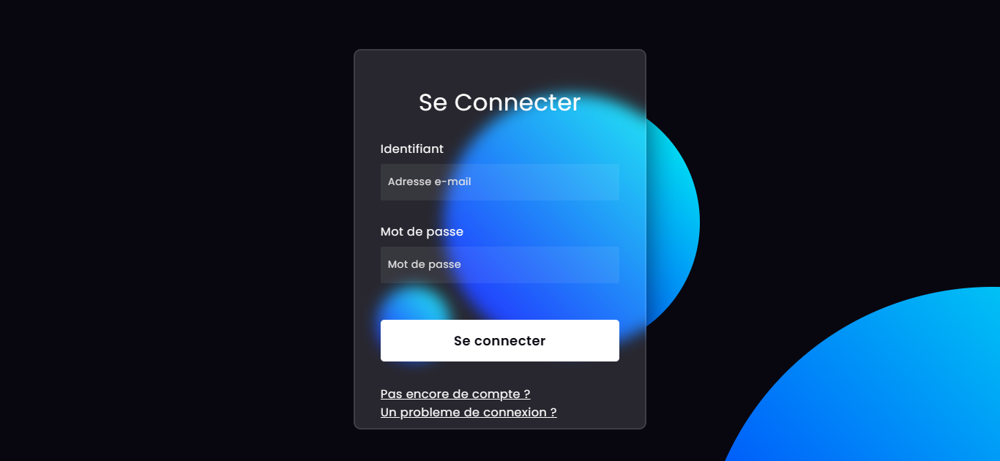

Projet Gedima'Gination
Contexte
Pendant ma 2ème année de BTS SIO, j'ai réaliser un jeu concours en binôme. Ce jeu a pour but d'élire la meilleure réalisation selon les votants, des clients des magasisn de Gedimat. Les participants ont la possibilité de s'inscrire sur une application web pour poster sa réalisation. Les votes sont effectués sur une application mobile et les deux applications communiquent grâce à une API.
Technologies


Organisation
Pour ce projet nous avons travaillé sous la méthode agile en faisant plusieurs sprint. Nous avons utilisé trello pour le découpage des tâches et GitHub pour versionner le projet.

Réalisation
Le projet a commencé par la création d'un formulaire pour poster sa réalisation.

Nous avons créé l'API qui a permis d'envoyer les réalisation sur l'application mobile.

Sur l'application mobile, le client se connecte avec un code qu'il a eu lors d'un achat.

Il peut alors choisir 3 réalisations et lui attribuer la note de 1 à 5.

Un classement peut être prévisualisé par le gérant et il a aussi la possibilité de le publier. Un visiteur et un participant on aussi la possibilité de voir le classement s'il est publié.

Un participant à la possibilité de se connecter pour voir le classement de sa réalisation et le gérant peut lui se connecter pour accéder au Back Office

Bilan
Ce projet m'a permis de découvrir une autre façon de travailler, notamment avec les sprints. Mais aussi de me responsabiliser car le travail était en autonomie avec mon binôme. J'ai aussi pu me familiariser avec les technologies que j'ai utilisé et donc gagner en compétences sur celle-ci.